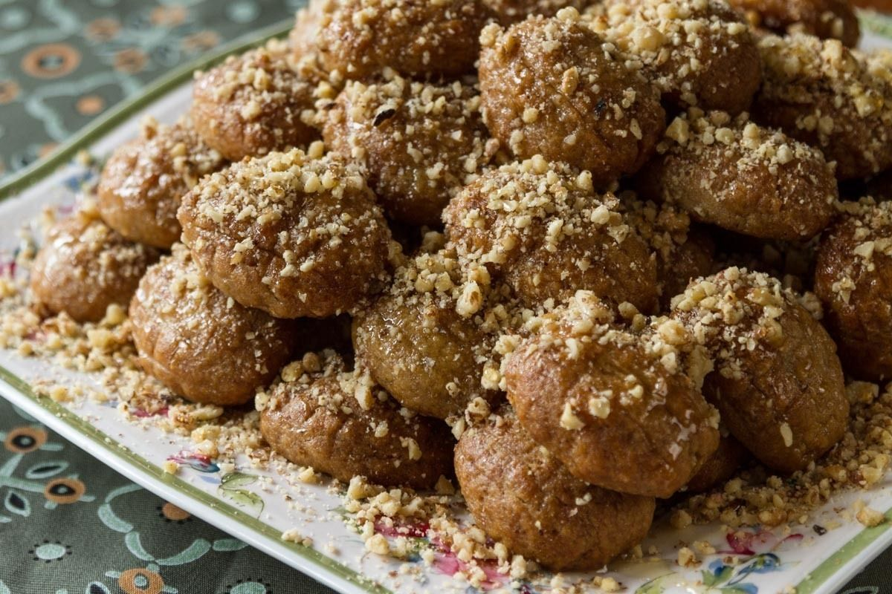

Melomakarona recipe

Description
Another traditional recipe for Christmas cookies from Greece with honey and cinamon flavours !
Ingredients
For the syrup
- 500g water
- 800g granulated sugar
- 150g honey
- 3 sticks of cinamon
- 3 whole cloves
- 1 orange cut in half
1st mixture
- 400g orange juice
- 400g seed oil
- 180g olive oil
- 50g icing sugar
- 1/2 teaspoon ground cloves
- 2-3 teaspoons cinamon
- 1/4 teaspoon ground nutmeg
- 1 teaspoon baking soda
- orange zest of 2 oranges
2nd mixture
- 1 kilo all purpose flour
- 200g semolina, fine
Steps
For the syrup
- Boil all of the ingredients for the syrup, apart from the honey, until the sugar melts. Remove from heat. Add the honey and mix till combined
- Let the syrup cool for 3-4 hours. It must be cold by the time the cookies come out from the oven.
- You can prepare the syrup from the day before.
For the cookies
- Preheat the oven to 190°C set to fan
- To make the cookies, you need to prepare 2 separate mixtures.
- For the first mixture, add all of the ingredients in a large bowl. Mix, using a hand whisk.
- In a separate bowl, add all of the ingredients for the second mixture.
- Combine the first and second mixture.
- Mix by hand, very gently and for a very short time (10 seconds at the most). If you mix longer the mixture will split or curdle.
- Mold cookie dough into oval shapes, 3-4 cm in length, 30 g each. Try to keep them as similar as possible.
- Bake for about 20-25 minutes, until they are crunchy and golden brown.
- As soon as you remove them from the oven, soak the hot cookies in the syrup for 10 seconds.
- Allow them to drain on a wire rack.
- Drizzle with honey and chopped walnuts.